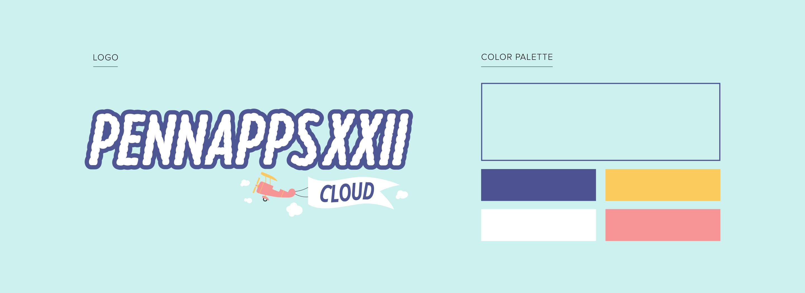
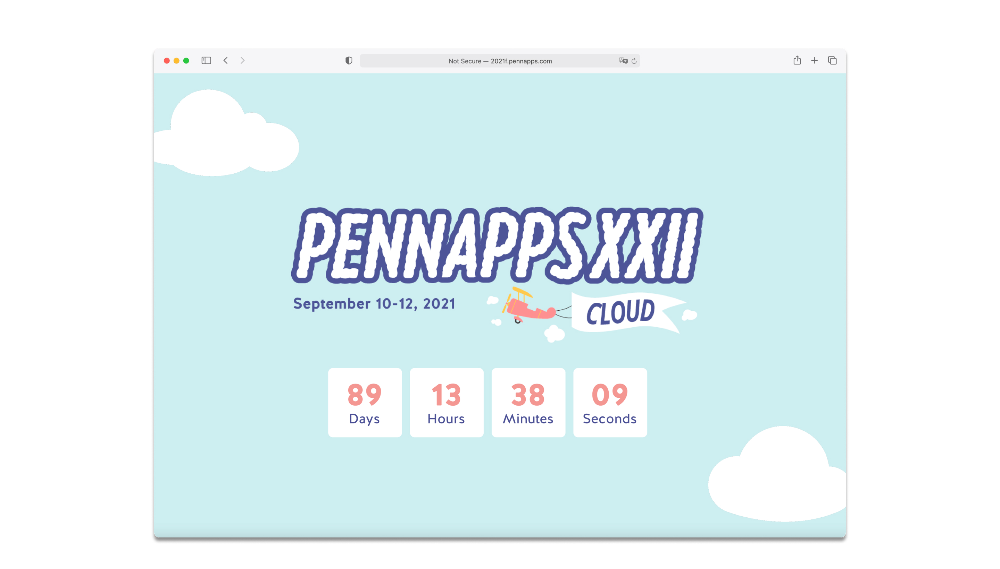
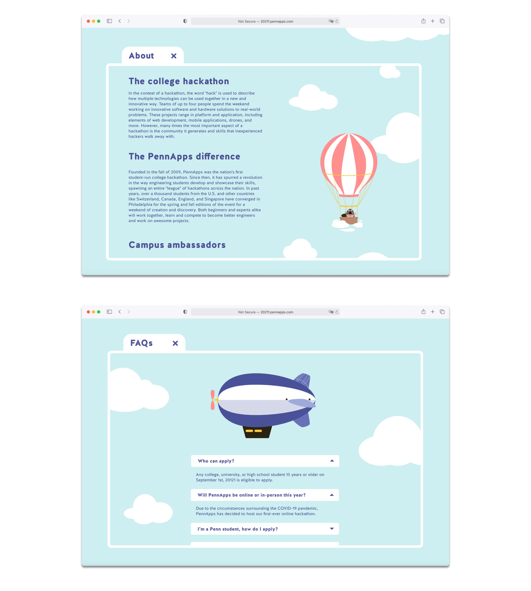
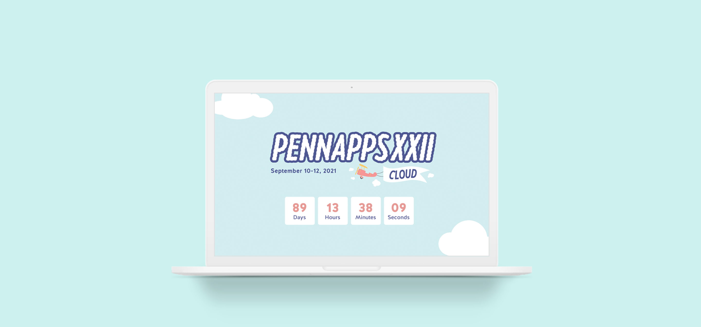
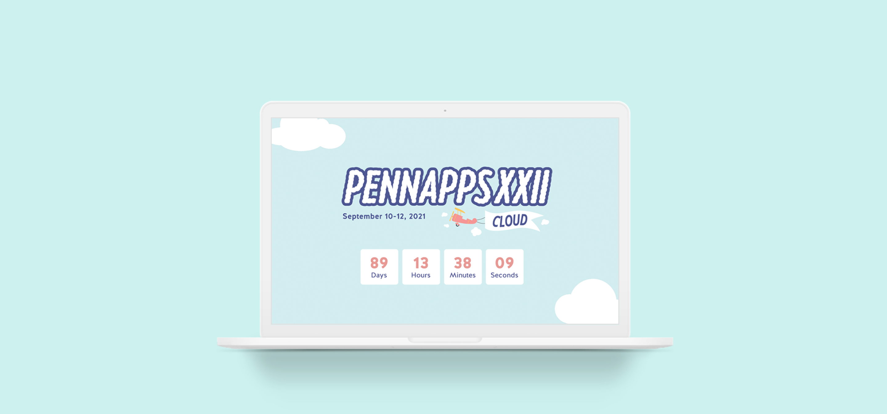

PennApps
Role: Co-head of Creative (2020 - present)
Co-Designers: Linda Ting (Co-Head), Sylvia Zhao
Date: Summer 2021
Summary: As a co-head of the PennApps Creative Team, I help lead the development of the visual identity and website design of PennApps’s annual hackathon and workshops. Responsibilities include brainstorming the creative theme of the hackathon, ensuring that all designs remain consistent with this identity, managing social media, and creating and approving deliverables. Below is a sampling of the web design work I developed alongside a few team members for the Fall 2021 hackathon.
The PennApps website is a one-page site that acts as a landing page for all basic information regarding the hackathon. As such, it must have clearly-defined sections (about, apply, logistics, FAQs, sponsors). It must also stay consistent with previous designs and adhere to the annual theme. For Fall 2021, this theme was clouds.
The goal for the site was to keep it fun, consistent with the other Fall 2021 designs, and easy to navigate. Consequently, we utilized the logo and color palette that our team had previously developed. We also prioritized maintaining the flat and clean illustration style that the logo highlighted.


Overall, the site emphasizes the illustrative element exhibited in the logo. Little illustrations are scattered throughout the website and interact with the user. For example, illustrations alongside the text of each section are contained within a miniature browser window, allowing the users to scroll through the window and uncover small scenes. Examples of scenes include the platypus mascot floating in a hot air balloon or a suspiciously-platypus-shaped blimp gliding through the clouds. All of these illustrative moments help frame the hackathon as fun, playful, and creative.

 
